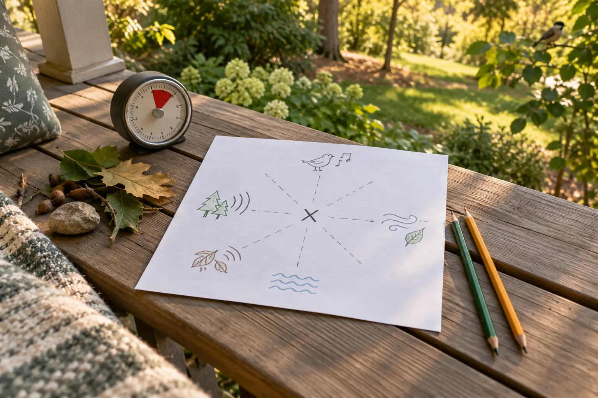

Near + living
Footsteps, wings, a dog tag, insects or leaves moved by an animal. Mark direction and one clue that made it seem close.
AFTER SCHOOL · AGES 6–12 · 20 MINUTES · FREE
You do not need a hike, app or worksheet. Mark where you are, listen for five minutes, draw each sound in its direction, and compare what changed when everyone stopped talking.

A sound map turns a porch, yard, apartment courtyard or neighborhood bench into a place worth noticing. It is not a scavenger hunt for exotic wildlife and it does not require recording strangers. The National Park Service describes a soundscape as the natural and human-made sounds in a place. Its youth activity uses paper, pencil, an X for the listener and marks that show where sounds come from.
The useful family version is shorter than a full soundwalk: one safe listening spot, five quiet minutes, ten minutes to compare and five minutes to repeat or close. The NPS activity is aimed at ages 6–12 and suggests about 30 minutes; this adaptation trims it to a school-night block while keeping the core observation method.
No phone app, microphone or camera is required. Do not record neighbors or private conversations. If a phone provides the timer, keep it face down and in airplane or do-not-disturb mode unless the adult needs service for safety.
Use a porch, front step, yard, open window, courtyard or public bench where the family is allowed to be. Avoid road shoulders, active parking areas, construction, water edges and isolated spots. Each person draws an X in the center of the page to represent their listening position. Add a tiny arrow for the direction they are facing.
Start the timer. Every time a sound appears, draw a simple symbol in the direction it came from. Put nearby sounds close to the X and far sounds near the edge. Repeated sounds can get tally marks. A moving sound can get an arrow. Nobody needs to identify the source yet.
Each person circles one sound nobody else marked. Ask: Was it brief, soft, behind us, or covered by something louder? Different maps do not mean someone failed. Attention, hearing, position and timing differ. Children can use the NPS prompts: nearest, farthest, favorite, natural, human-made, calming or stressful.
Label each mark L for living, W for weather, M for machine or H for human activity. Use a question mark when uncertain. Count categories only after the labels are made. The point is noticing layers, not proving that nature “won.”
Listen for sixty more seconds with eyes closed only if the location is safe and an adult keeps eyes open. Or schedule the same spot for morning, rain, winter or a different traffic period. The NPS notes that sound changes with time, weather, season and human activity. Repeating the exact spot creates a small, honest local dataset.
Ages 6–8: use pictures and near/far only. Ages 9–10: add the four categories and tallies. Ages 11–12: compare two time periods and write one inference plus the evidence. Siblings can share one page if competition will overwhelm listening.
For hearing differences, use vibration, visible movement and touch cues: a truck vibration through the bench, leaves moving, a bird landing or wind on skin. The NPS soundwalk guidance explicitly suggests adapting with visual and tactile cues. Nobody has to remove a hearing device or tolerate uncomfortable volume.
An adult chooses the site and stays aware of traffic, weather, people and property boundaries. Children do not cross streets or walk toward a sound. Do not write house numbers, names, license plates or descriptions of private conversations. If a sound suggests danger—an alarm, crash, aggressive animal or approaching storm—the activity ends and the adult acts.
Use the parking-lot role and handoff plan if the listening spot is near a vehicle area. For a moving version on a familiar route, the 30-minute after-school nature mission provides the turnaround and group rules.
Rain: listen from a covered porch or open window and compare rain on three surfaces. Cold: run three minutes outside and finish the map indoors. Heat, smoke, thunder or unsafe air: stay inside and map household sounds from one room. Low energy: skip drawing; name one near, one far and one moving sound. Sensory overload: shorten to thirty seconds, move indoors or stop. This is attention practice, not exposure therapy.
Date the page and write the weather in plain language. Repeat the same spot next month. Place the two maps side by side and ask what changed, what stayed and what remains uncertain. A single five-minute map cannot measure neighborhood noise or wildlife abundance. A small series can show patterns worth asking about without pretending to be a scientific survey.
If children want a second no-spend evidence activity indoors, use the 30-minute flashlight shadow lab. If the week needs planning before another activity, use the 20-minute family calendar reset.
Skip an outdoor version when the location is unsafe, air quality or weather is poor, or a child is distressed by unpredictable sound. Modify for mobility by using one seated “sound sit,” an option the NPS recommends. Modify for hearing differences with vibration and visual movement. Skip sorting categories when labeling becomes an argument; keep the map as a record of noticing.
MAKE THE DAY COUNT
Build the plan your family can finish well, then leave enough energy for the next part of the day.
More family plans